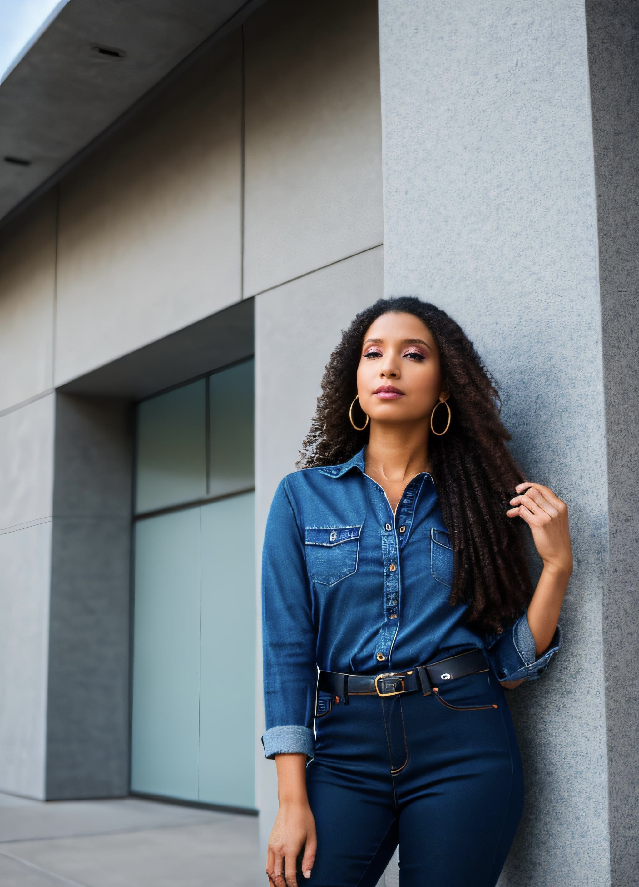

My passion has always lead my projects in life. This task in the coding class was a chance for me to show what i have learned and combine my personal interests. This is what made these proejcts so much fun to start with!
Click HERE for my tribute project!
Both projects include my passion for music and art. With a Fine Arts degree from CUNY Brooklyn College, this was a perfect way to explore my artistic side and combine it with a more technical approach. Thank you to NYPL for the opportunity to continue my education and expand my mind to more career paths. This has helped me pivot my career and skill up for my career as a Quality Assurance Tester/ Software Engineer.
Click HERE to view my Survey Project!
